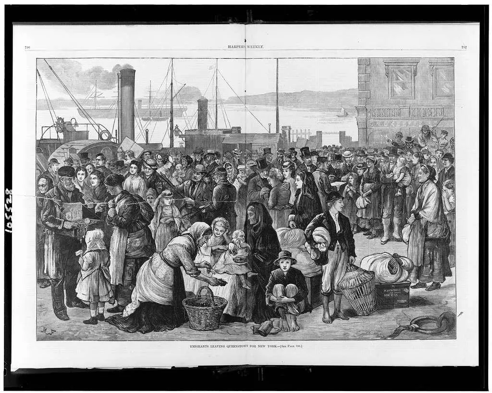
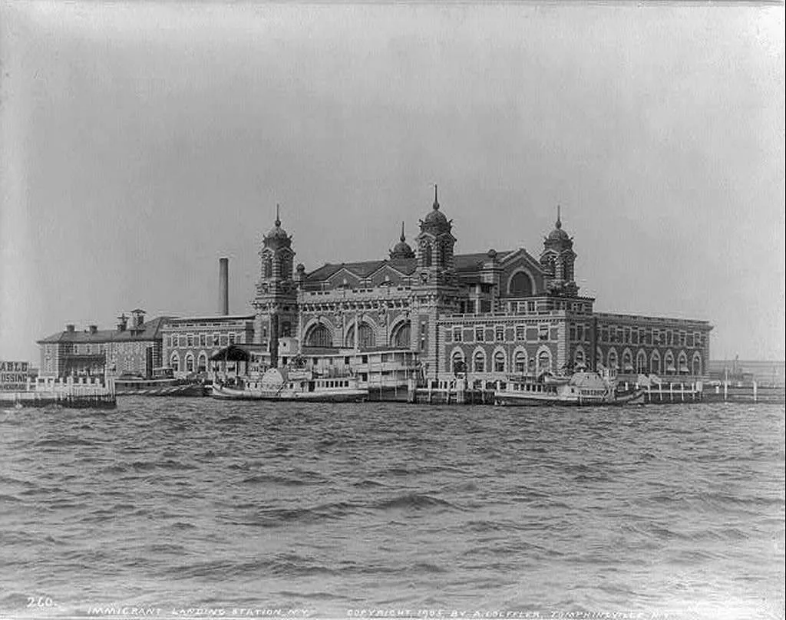
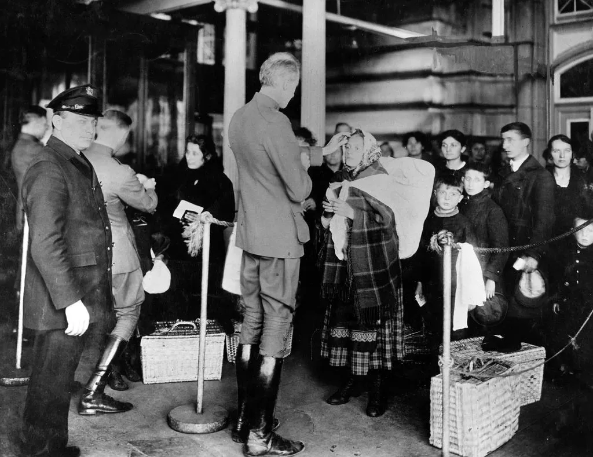

Tra Sogno e Realtà: Leggere l'Immigrazione
L'analisi del romanzo "Vita" di Melania Mazzucco ci guida attraverso la dura esperienza dell'emigrazione italiana verso gli Stati Uniti all'alba del Novecento.
Il Viaggio verso l'America
Il romanzo Vita di Melania Mazzucco racconta l'esperienza dell'emigrazione italiana verso gli Stati Uniti all'inizio del Novecento, prendendo spunto dalla storia reale della famiglia dell'autrice. La storia si incentra su Vita, una bambina di nove anni e Diamante, un ragazzino dodicenne, che partono dall'Italia, precisamente da Tufo di Minturno per raggiungere il padre di lei, Agnello, emigrato anni prima a New York.

Nel libro il viaggio verso l'America è lungo, duro. Gli emigranti viaggiavano stipati nelle stive delle navi, in condizioni igieniche molto difficili. Molti lasciavano i loro paesi senza sapere se sarebbero mai tornati. Per Vita e Diamante il viaggio significa separarsi dalla propria terra, dalla famiglia e dall'infanzia.
Il Primo Ostacolo: Ellis Island
L'arrivo a Ellis Island simboleggia l'inizio della loro "nuova vita". Questa è l'isola davanti a New York che tra il 1892 e il 1954 fu il principale centro di ingresso degli immigrati negli Stati Uniti, attraversata da milioni di persone tra italiani, scozzesi ecc. Dopo il lungo viaggio in nave, Vita, Diamante e gli altri immigranti arrivano finalmente nel porto di New York, ma prima di entrare negli Stati Uniti devono fermarsi a Ellis Island per affrontare il centro di controllo.
"Ieri, 12 aprile 1903, dodicimilaseicentosessantotto persone sono sbarcate sull'isola. Solo dalla loro nave, il Republica, sono scesi in duemiladuecentouno."
— Capitolo: "Good for father"
L'approdo a Ellis Island segna il primo grande shock: Vita arriva debilitata e febbricitante dopo la traversata e osserva il salone pieno di emigranti e parenti che si cercano: uomini poverissimi, facce dure, gente stanca e disperata. In questo caos emerge subito il contrasto tra il sogno americano e la realtà concreta della povertà.

Quando arrivano a Ellis Island, gli immigrati vengono sottoposti a controlli medici e interrogatori. Gli americani volevano verificare che fossero sani, capaci di lavorare e non considerati "pericolosi" o troppo poveri. Bastava poco per una malattia, un errore nei documenti o una risposta sbagliata per essere respinti e rimandati indietro. Le persone aspettano in fila per ore, non comprendono bene la lingua, e hanno paura di perdere tutto dopo il viaggio affrontato.
Le Illusioni Infrante
Uno degli aspetti più importanti di questa scena è l'immaginazione di Vita: la bambina ha sempre immaginato il padre lontano come elegante, ricco, quasi aristocratico. Nella sua fantasia lui dovrebbe arrivare "con lo yacht", trattarla come una principessa e riconoscerla immediatamente. Questa fantasia infantile mostra quanto l'America sia stata costruita, nella mente degli emigranti, come luogo mitico di ricchezza e riscatto.
"...questo tizio con la scucchia è suo padre."
— Capitolo: "Good for father"
La realtà, però, distrugge questa immagine. Il padre appare povero, trasandato, sudato, vestito male. Vita inizialmente non vuole riconoscerlo: prova vergogna, paura e delusione. Il momento è importante perché la bambina comprende improvvisamente che l'America non ha trasformato suo padre in un signore; lo ha invece consumato e impoverito. Inoltre, il padre stesso fatica a riconoscere la figlia: la guarda a lungo, come se cercasse nei lineamenti della bambina un ricordo lontano, un dettaglio che sottolinea la frattura prodotta dall'emigrazione nelle famiglie.

"l'ha guardata a lungo (...) ma non l'ha riconosciuta."
— Capitolo: "Good for father"
La Realtà di Little Italy: Pregiudizi e Sopravvivenza
Anche Diamante vive l'arrivo come un'esperienza decisiva. Lui è più duro, più silenzioso e orgoglioso rispetto a Vita, e fin da subito capisce che per sopravvivere dovrà adattarsi alla violenza e alla precarietà della vita americana. New York non appare come una città luminosa, ma come un luogo sporco, sovraffollato e aggressivo, dominato dalla fame, dallo sfruttamento e dalla criminalità della Little Italy dei primi del Novecento. La pensione di Prince Street dove i due vengono accolti è simbolica: è un microcosmo dell'emigrazione italiana, pieno di personaggi disperati, lavoratori sfruttati e piccoli criminali dove i ragazzi iniziano la loro educazione alla sopravvivenza.
Gli americani guardavano spesso gli italiani con disprezzo, li definivano DAGO (nel libro si spiegava come un insulto verso chi era peggio di un cavallo con problemi intestinali). Gli immigrati del Sud Italia erano considerati sporchi, ignoranti, violenti o criminali. I bambini ereditavano immediatamente questo pregiudizio: erano poverissimi, parlavano poco inglese e vivevano nei quartieri sovraffollati, per questo venivano facilmente sfruttati e raramente protetti, imparando presto che valgono meno degli altri e che devono sopravvivere con astuzia, obbedienza o durezza.
Oltre il Mito Americano
I lavori che svolgevano erano spesso pesanti, pericolosi e mal pagati, come lustrascarpe nelle strade, venditori ambulanti, garzoni nei negozi, operai nelle fabbriche tessili. Diamante lavora in ambienti degradati e violenti dove i bambini vengono trattati quasi come adulti, entra in contatto con criminalità e non è protetto da nessuno. Anche Vita, crescendo, è esposta alla povertà, lavorando spesso come domestica, sarta o operaia.
Attraverso gli occhi di Vita e Diamante, l'America dipinta nel romanzo perde ogni sua aura mitica, rivelando così ciò che è stata storicamente per i migranti: non il sogno americano, ma una realtà di pregiudizi e discriminazioni. Questi elementi segneranno profondamente la loro esperienza e hanno caratterizzato il viaggio di intere comunità di persone che, convinte di andare a trovare la fortuna, hanno trovato invece un muro di preclusioni ed opportunità mancate.